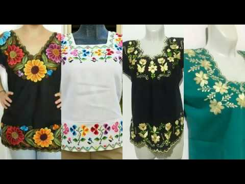

Ropa Para Dama
Más Información
Estas Blusas Estan Elaboradas A Mano Por Personas De La Cultura Maya. Estan HechasCon Gram Empeño Y Dedicación Pero Sobre Todo Con Paciencia Ya Que Estas Blusas Son Muy Atractivas Por Los Colores Y Los Bordados Que Llevan, Que Es Lo Que Llama La Atención De Las Personas Que Le Gusta Las Artesanias De Las Diferentes Culturas, Estas Prendas Satsfacen A Cada Uno De Los Clientes Que Desee Comprar Uno. Aqui Podras Encontrar Diferentes Tipos De Diseños Para Dama.